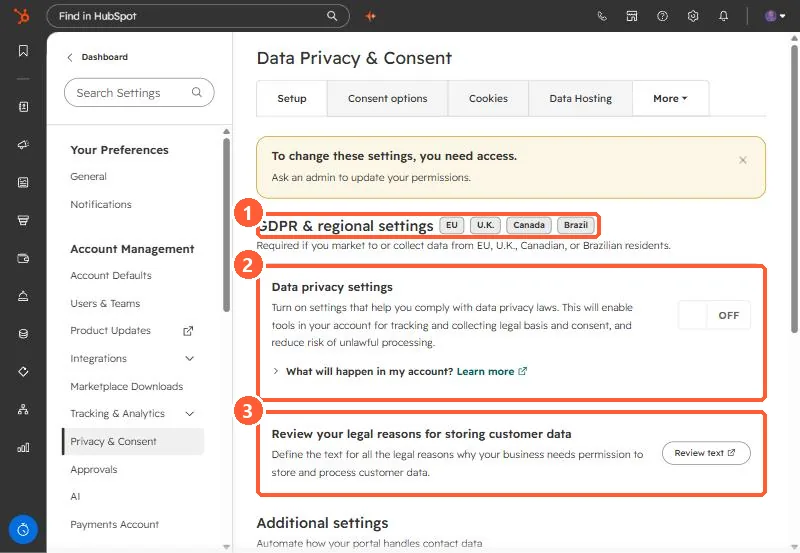

Short answer
Go to Settings, Privacy & Consent. Under GDPR & regional settings (EU, U.K., Canada, Brazil), the Data privacy settings toggle turns on tools for tracking legal basis and consent. HubSpot lists what changes: unsubscribe links are turned on for one-to-one and sequence emails, the Sales extension shows banners on contacts without a legal basis, and open and click tracking is not added for contacts with no legal basis. For EU-hosted accounts it is on by default. It is off in my demo. This is not legal advice.
1. The Setup tab
Open Privacy & Consent. My demo login cannot change it, so a yellow banner sits at the top.


2. What turning it on changes
- Unsubscribe links turn on for one-to-one and sequence emails, for users who do not have them on yet.
- The HubSpot Sales extension or add-in shows banners on contacts without a legal basis for processing.
- You can add consent and legal basis through imports, bulk edit, or manual creation.
- Open and click tracking is not added for contacts without a legal basis. See email tracking consent.
3. Things to know
- For accounts with data stored in the EU, HubSpot says this is on by default.
- Turning it off does not turn off the cookie consent banner. See cookie consent banners.
- HubSpot says your legal team is the best resource for compliance advice.